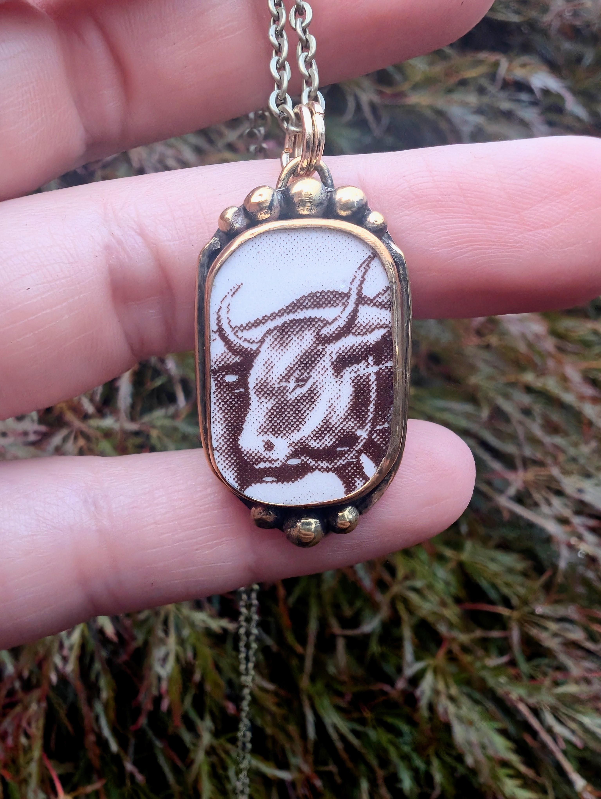

Made the slow way.
Each piece begins at the bench — cut, shaped, soldered, hammered, filed, set, and finished by hand.
Small variations, tool marks, and organic textures aren't defects. They're part of what makes handmade jewelry feel alive.
The Olive Feather Co. website is still being polished. Feel free to look around while I finish things up.
Jewelry made slowly and intentionally using traditional metalsmithing techniques, natural materials, and pieces with a little story of their own.
Shop Available PiecesHANDCRAFTED IN OREGON

The Olive Feather Co. creates one-of-a-kind jewelry using brass and copper, embracing natural stones, reclaimed china, and organic textures.
No two pieces are quite alike — and that's rather the point.
Earthy stones, reclaimed china, and materials with their own shape, pattern, and personality.
Cut, soldered, hammered, filed, shaped, set, and finished by hand.
Small batches and original pieces made to be lived in and loved.
Rings, necklaces, earrings, and other small treasures are made by hand and released as they're finished. See what's currently available in the shop.
Shop the CollectionEach piece begins at the bench — cut, shaped, soldered, hammered, filed, set, and finished by hand.
Small variations, tool marks, and organic textures aren't defects. They're part of what makes handmade jewelry feel alive.
The olive represents peace, hope, and enduring things.
The feather is a nod to birds, the natural world, and a particularly memorable duck named Lightning.
Together, they became a fitting name for jewelry made with curiosity, patience, and a little whimsy.
I'm the hands behind The Olive Feather Co. I make each piece in my small home studio in Oregon, mostly working with brass, copper, natural stone, and reclaimed china.
I make jewelry for people who appreciate beautiful things that don't need to be perfect to be special.